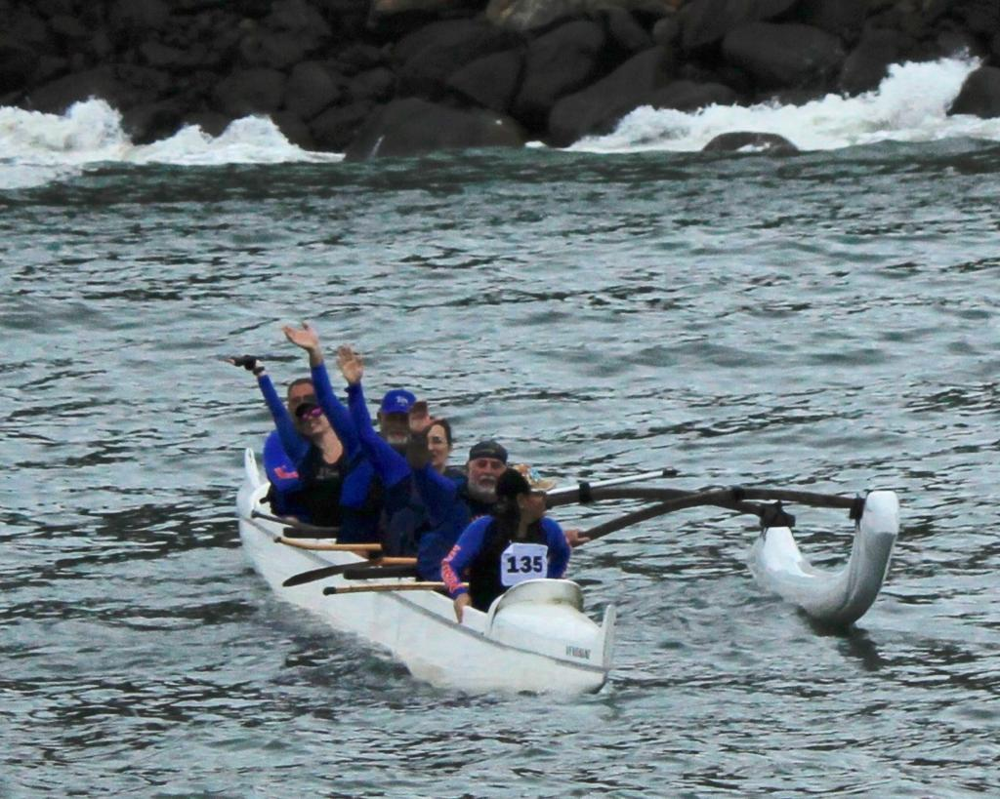
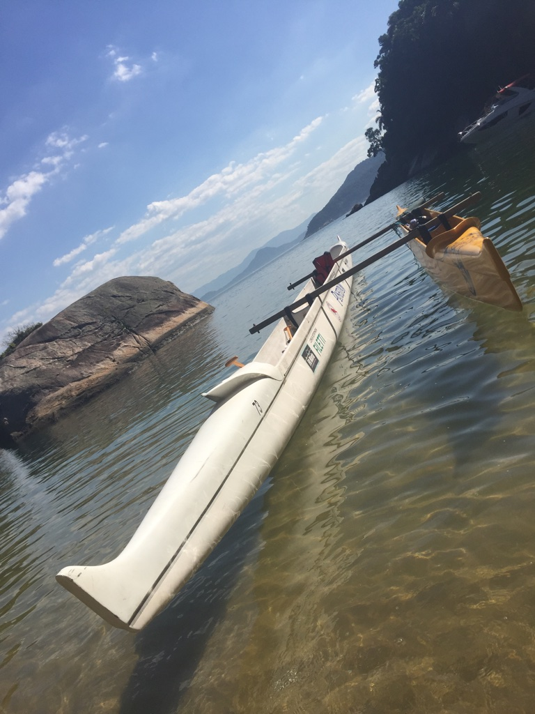

Algumas Provas e competições
- Entidade regulamentadora do esporte: CBVAA (Etapas Oficiais)
- Aloha Spirit
- Desafio Morro de São Paulo - (60km)
- Volta à Ilha de Santo Amaro - (75km) - SP
- Rio Va'a - RJ
- Volta à Ilhabela - ( 90KM) - SP
- Volta à Ilha de Vitória- (35Km) - ES
- Volta à Ilha de Fernando de Noronha- (37Km) - PE
Volta à Ilhabela Dezembro/2017
Clubes de canoa
Por ser uma atividade que envolve muito trabalho em equipe, apesar de existirem canoas individuais, a Canoagem Polinésia ou Havaiana se desenvolveu organizadas em clubes que promovem a iniciação, treinos regulares e competições em diversas partes do mundo. No Brasil, essa prática seguiu o modelo polinésio, tendo iniciado a partir de núcleos em Santos e no Rio de Janeiro.
Atualmente existem bases para a prática do esporte em vários estados brasileiros, com maior concentração na região sudeste. A prática pode ter finalidade esportiva, recreativa e até mesmo turística, e normalmente é oferecida por associações, clubes ou indivíduos.
Benefícios da prática de remar
Remar é uma opção de qualidade de vida, pois remando estamos em contato com a natureza no mar contemplando sua beleza, grandiosidade e todos seus mistérios. Sempre respeitando suas adversidades.
A prática traz também benefícios para o corpo, melhorando o condicionamento e flexibilidade. Como estamos em grupo nas canoas também ampliamos nossas relaçôes interpessoais.
Todos os remadores sempre estão em perfeita sincronia, um ajudando ao outro, pois somente assim a canoa navega com rapidez. O espírito ALOHA está sempre muito presente em nossas remadas.
Curiosidades sobre as canoas
As canoas são batizadas segundo a tradição havaiana, e recebem um nome que simbolize a identidade, a energia (mana) da embarcação, que possa traduzir seu verdadeiro espírito. Uma vez batizadas e abençoadas, passam a ser consideradas membros da ohana (família). Sempre nos referimos às canoas pelo nome de batismo.
Cuidamos delas como de um ente querido antes de sairmos para o mar, e lavamos após seu retorno. Respeitamos as canoas, nunca pulamos ou passamos sobre as mesmas, damos a volta. Pular a canoa de um lado para o outro é uma atitude desrespeitosa.Antes de cada remada o ideal é reunir o grupo para abençoar a canoa e pedir proteção.
Depois de cada remada ou prova, os remadores da equipe cumprimentam-se e parabenizam uns aos outros pela prova, agradecendo a canoa pelo que ela acabou de proporcionar.